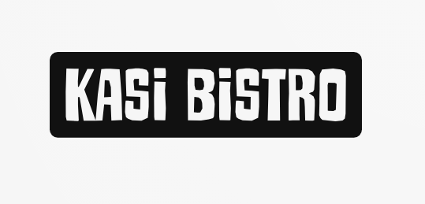

Home
Contact Us
About Us
Menu
Enquiries

Welcome to Kasi Bistro — where vibrant flavors, heartfelt hospitality, and a true sense of home come together.
Founded in 2024, Kasi Bistro is more than just a place to eat — it’s a celebration of township culture, a love letter to our roots, and a modern twist on traditional African cuisine. Inspired by the rich culinary traditions found in the heart of our communities, we bring you a dining experience that’s soulful, bold, and full of life.
Our bistro was born out of a passion to create a space where people could gather, connect, and enjoy food that tells a story. Every dish on our menu is carefully crafted to reflect the spirit of the kasi — from the smoky aroma of grilled meat on the streets to the comfort of a home-cooked Sunday meal. We use fresh, locally-sourced ingredients and a whole lot of love to serve up meals that are as authentic as they are delicious.
At Kasi Bistro, we believe food is more than sustenance — it’s an experience. That’s why we’ve designed our space to feel warm and welcoming, with a blend of rustic charm and modern style. Whether you’re here for a quick lunch, a slow dinner with friends, or a weekend vibe with music and drinks, you’ll always feel like part of the family.
We’re proud to be a local business that supports our community. From creating jobs to collaborating with local suppliers and artists, Kasi Bistro is committed to growing with the people around us. We’re not just here to serve food — we’re here to uplift, inspire, and share joy one plate at a time.
Thank you for choosing Kasi Bistro. Come hungry, leave happy — and always come back for more